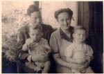

De verandering waargenomen
A.E. Cohen als historicus en universitair bestuurder
Tentoonstelling in de Universiteitsbibliotheek te Leiden, van 28 november 2003 tot en met 4 januari 2004.
Tentoongestelde stukken
5. Joodsch Lyceum en huwelijk
Dadelijk na het behalen van zijn doctorsbul, meldde Dolf Cohen zich aan bij de inspecteur voor de lycea om een plaats als docent geschiedenis en/of Nederlands. Daarop kreeg hij zijn kans aan het Joods Lyceum te Haarlem. Met ingang van het schooljaar 1941/1942 moesten joodse leerlingen op last van de bezetter naar afzonderlijke scholen. Het Joods Lyceum te Haarlem, gevestigd aan de tot Schouwburgstraat omgedoopte Wilhelminastraat, telde aanvankelijk negentig leerlingen en voor elk vak één leraar. Cohen doceerde er in elke klas Nederlands en in de eindexamenklas van het gymnasium bovendien geschiedenis. De documenten en foto's uit het bezit van Cohen (grotendeels overgedragen aan het Gemeentearchief van Haarlem) zijn tot nu toe de enige bekende stukken betreffende het Joods Lyceum. Nadat de eerste jodenvervolgingen in Haarlem begonnen waren, kon Cohen onderduiken. Hij had het relatieve geluk gedurende de rest van de oorlog op één adres te kunnen blijven en wel bij Willem Fuhri Snethlage. Aan het Joods Lyceum kwam in februari 1943 een einde toen alle joden gelast werden zich in Amsterdam te vestigen.
Hetty Koster had in Amsterdam geschiedenis gestudeerd en was eens door Dolf Cohen uitgenodigd voor een corpsbal in Leiden. Dat was geen succes. In 1939 trouwde zij met de classicus Nol Cosman, die zich in mei 1940 het leven benam. Twee jaar later verloofde zij zich met haar collega Dolf Cohen en gaven zijn ouders hun toestemming voor het voorgenomen huwelijk. Een leerlinge van het Joods Lyceum, Judith Swaab, tekende alvast het bruidspaar Cohen-Koster, gevolgd door de leraren van de school. Na onderduik en bevrijding vonden Hetty en Dolf elkaar weer, waarna zij op 14 juni 1945 in het huwelijk traden. In 1946 werd hun zoon Floris geboren, in 1947 hun zoon Job. Dolf en Hetty meldden zich dadelijk na de oprichting aan als lid van de Partij van de Arbeid. Hetty werd later gekozen als lid van de gemeenteraad van Heemstede, waarvoor zij zich jarenlang inzette.
| 5.1. Als docent aan het Joods Lyceum te Haarlem. [AEC] | |
| 5.2. Dolf Cohen, Hetty Cosman-Koster en drie leerlingen te Haarlem, kort na het invoeren van de jodenster. [AEC] | |
 |
5.3. Hetty Cosman-Koster als docent met de leerlingen van de vierde klasse van de HBS-afdeling. [AEC] |
| 5.4. Cijferschriftje met rapportcijfers
voor de leerlingen. [Haarlem, Gemeente-archief] |
|
| 5.5. Notariële acten waarbij de ouders
van Cohen hun zoon toestemming verlenen in het huwelijk te treden
met Henriette Koster, 24 juli 1942. [AEC]
¶ Een paar weken na het opstellen van deze acten doken beiden – op afzonderlijke adressen – onder. Dit duurde tot de bevrijding van Nederland op 5 mei 1945. |
|
|
5.6. Tekening van het te verwachten bruidspaar Cohen-Koster, gevolgd
door de leraren van de school, getekend door Judith Swaab [AEC]
¶ Judith Swaab, die de oorlog niet overleefde, was een leerlinge
in de vierde klas van het Joods Lyceum. Achter A.E. Cohen en H.
Koster volgen: H. Heertje, M. Pinkhof, Nol, E.J. Polak, A.
Gerzon-Caffé, H. Hoek, D’Ancona, E.L. Elte en S. Elte, de rector.
Terzijde: M. Rozelaar. De leraren Trijtel, Hoek en De Pauw
ontbreken. |
|
| 5.7. De grondslagen der internationale
politiek. Een sociologische studie. Typoscript, 25 pp. [AEC]
¶ Synopsis, geschreven tijdens de onderduikperiode, van een voorgenomen studie. |
|
| 5.8. Menu van het huwelijksdéjeuner, 14 juni 1945. [AEC] | |
|  | 5.9. Dolf en Hetty Cohen met hun zonen Floris (* 1946) en Job (*1947). Foto, oktober 1948. [AEC] |
| 5.10. Dolf met zijn zonen aan het scrabblen, omstreeks 1960. [AEC] |
| vorige pagina | volgende pagina |